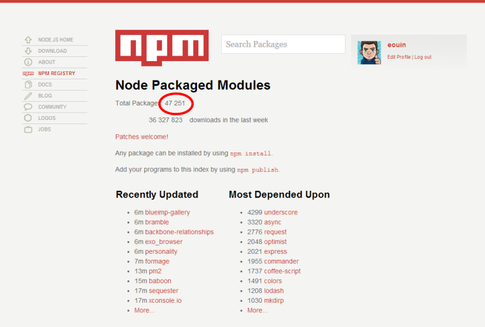

Introduction to GruntJS, Bower and NodeJS
By Edouard Ouin, David Jimenez Calvo and Sinikka Schroter.
What is GruntJS?
A Script Runner
It's like a build tool, but different.
Think make, rake, jake, cake, etc.
Setup
- npm install -g grunt-cli
- git init demo
- cd demo
- npm init
- npm install grunt --save-dev
- mkdir src
Gruntfile
module.exports = function(grunt) {
grunt.initConfig({
pkg: grunt.file.readJSON("package.json"),
...
})
}
JSLint
- npm install grunt-jslint --save-dev
Gruntfile
jslint: {
files: ["src/**/*.js"],
directives: {
devel: true
}
}
Watch
- npm install grunt-contrib-watch --save-dev
Gruntfile
watch: {
jslint: {
files: ["src/**/*.js"],
tasks: ["jslint"],
options: {
interrupt: true
}
}
}
Uglify
- npm install grunt-contrib-uglify --save-dev
Gruntfile
uglify: {
build: {
files: {
"js/index.min.js": ["src/index.js"]
}
}
}
What is NodeJS?
Node.js is a way of running JavaScript on the server.
Node.js is a platform built on Chrome's JavaScript runtime for easily building fast, scalable network applications. Node.js uses an event-driven, non-blocking I/O model that makes it lightweight and efficient, perfect for data-intensive real-time applications that run across distributed devices.
Server side.
- Javascript
- V8: High Performance Javascript engine
- Single threaded
- Asynchronous, Event Based
- Event callbacks
So why are async and events good?
- Easier to write
- Scale better
- Lower memory, CPU overhead
Rapid prototyping, rapid development
- RESTful services with no effort
- No-fuss, native JSON handling
- Great package management - NPM
Community modules - NPM
Interesting projects
-
Express
- Minimal web application framework
- Additional features are provided as modules or middleware: template engines, models, authentication and authorization, etc ...
-
Meteor
- Next-gen framework for real-time collaborative web applications
- Live page updates
- Support for offline databases with subsequent synchronization
-
Socket.io
- Provides support for server-initiated push events using WebSockets, Ajax polling, iframe, JSONP or Flash based channels
- Transparent for both clients and server
- Can run standalone or integrated with Express
When to use NodeJS
- REST+JSON APIs
- Backend for single-page web app (same language in client and server)
- Real-time web apps with Socket.io and Meteor
- Quick prototyping
When NOT to use NodeJS
- CPU-bound tasks
- Multi-threaded applications
- Applications that have to process large amounts of data
Anybody using it?
How Paypal Is Being Revolutionized By Node.js And Lean-ux
What is Bower?
Bower is package manager for the web
Bower is a package manager for the web or, more specifically, browser development. Just think npm, but for browser development instead of node development. Bower’s purpose is to manage front-end assets, which can include not just javascript files, but also html, css, image, and font files. Because of this, Bower, unlike npm, can have multiple files (e.g. .js, .css, .html, .png, .ttf) which are considered the main file(s). Bower semantically considers these main files, when packaged together, a component.
What is the difference between Bower and NPM?
npm is most commonly used for Node.js modules, even though a few people use it for front-end packages. Bower is created solely for the front-end and is optimized with that in mind. The biggest difference is that npm does nested dependency tree, which doesn't work that well on the front-end, while Bower requires a flat dependency tree.